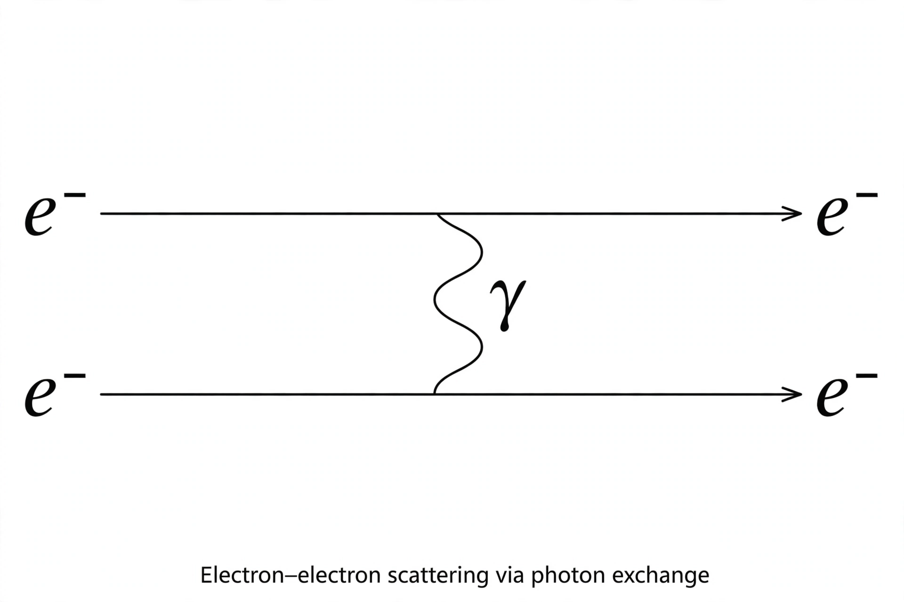

Feynman diagram

[Image: A basic Feynman diagram: two electrons exchanging a photon, with time running vertically]In theoretical physics, a Feynman diagram is a pictorial representation of the mathematical expressions describing the behaviour and interaction of subatomic particles. The scheme is named after its inventor, American physicist Richard Feynman, who introduced the diagrams in 1948.
Diagrams consist of lines (representing particles propagating through spacetime) meeting at vertices (representing interactions). Each element translates, by the Feynman rules of the theory in question, into a factor in a mathematical expression; summing the expressions for all diagrams at a given order gives the amplitude for a physical process, from which observable probabilities are computed. The interpretation of the diagrams as particle paths in spacetime is a useful heuristic — strictly, they are terms in a perturbation series.
Reading a diagram
External lines represent incoming and outgoing real particles; internal lines represent 'virtual particles' that mediate forces and need not satisfy the usual energy–momentum relation. In Quantum electrodynamics, vertices join two fermion lines and one photon line; fermion arrows run forward in time for particles and backward for antiparticles — an antiparticle may be drawn as a particle travelling backwards in time (the Feynman–Stückelberg interpretation). Antiparticles, loops (giving 'radiative corrections'), and ever more complex graphs appear as one goes to higher orders in the coupling.
History and use
Feynman developed the diagrams alongside his path-integral formulation of quantum mechanics and QED, presenting them in papers in 1949. Initially treated with suspicion by some theorists used to operator methods, they were popularised by Freeman Dyson and soon became the universal language of particle physics. Today automated software generates and evaluates millions of diagrams for precision Standard Model predictions at the Large Hadron Collider, and diagrammatic techniques are used across condensed-matter and statistical physics as well.